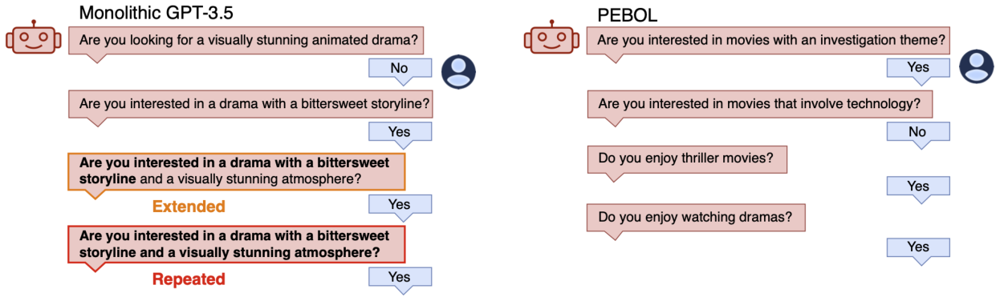
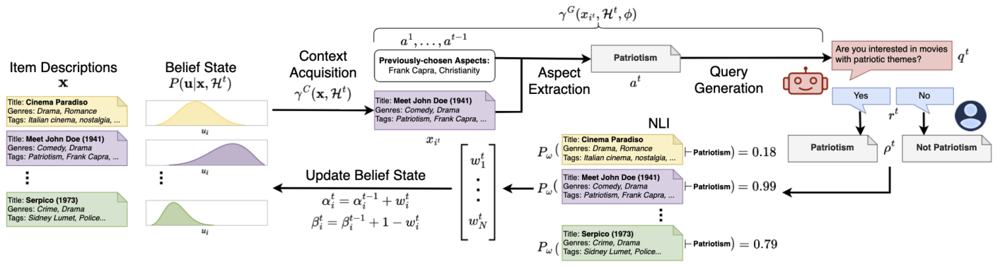

Bayesian Optimization with LLM-Based Acquisition Functions for Natural Language Preference Elicitation (基于 LLM 采集函数的自然语言偏好引导贝叶斯优化)
- 会议/期刊: RecSys 2024
- 作者与机构: David Eric Austin, Anton Korikov, Armin Toroghi, Scott Sanner (University of Waterloo / University of Toronto)
- 推荐链路定位: 召回（冷启动对话式偏好引导 → Top-10 推荐）
- 研究方向: 对话推荐与智能体仿真 / 大语言模型推荐 (LLM4Rec)
- 论文原文: https://arxiv.org/abs/2405.00981v2
- 开源代码: https://github.com/D3Mlab/llm-pe
TL;DR (1分钟核心速览)
冷启动对话推荐中，单体 LLM 缺乏多轮决策论推理，容易过度利用（反复追问已知偏好、查询重复）或过度探索（追问明显低价值物品）；而经典贝叶斯偏好引导 (PE) 虽策略最优，却只能处理评分/成对比较、无法生成自然语言查询。本文提出 PEBOL：把自然语言 PE 形式化为贝叶斯优化，用 NLI 蕴含分在 Beta-Bernoulli 共轭下维护物品效用后验，再用 TS/UCB 从后验中挑选一个物品描述作为 LLM 生成「是/否」查询的上下文。在 100 候选物品、10 轮对话的仿真协议下，MRR@10 在 Yelp 上达 0.27，较最优 Gemini-Pro 单体基线 0.17 相对提升 58.8%，且仅用更小更早的 GPT-3.5 做查询生成。
Background & Motivation (背景与核心矛盾)
- 主流范式: ConvRec 主流做法是 LLM 对话外壳 + 推荐模块调用（如 ReDIAL、KBRD 系列），依赖用户-物品交互历史初始化推荐器；另有单体 LLM 直接 prompt 全量物品描述做引导与推荐。
- 前人局限: (1) 单体 LLM 把全部 \(N\)个物品描述塞进上下文，代价随\(N\) 线性膨胀且无法增量更新物品库，行为不可控、不可解释；(2) 经典 BO/PE 方法（TS、UCB、POMDP、模板关键短语查询）理论上探索-利用平衡最优，但要求用户对不熟悉的物品打分或成对比较，无法理解自然语言物品描述。
- 核心洞察 (Key Insight): 自然语言查询的「探索/利用」并不需要由 LLM 隐式决定——它可以被一个显式概率后验决定；LLM 只需承担「把被选中的物品方面（aspect）转写成自然语言问句」这一生成职责。
- 本文切入点: 把 acquisition function 拆成 \(\gamma=\gamma_G\circ\gamma_C\)：\(\gamma_C\)用 BO 策略在贝叶斯后验上做决策论选择，\(\gamma_G\)用 LLM 在选定物品描述上做语言生成，从而把「无限语言空间」的采集问题降维到「\(N\) 个物品」的离散决策问题。

Method (核心方法设计)
1. 整体框架 (Overall Architecture)
给定任意物品集合 \(\mathbf{x}=[x_1,\dots,x_N]\)（标题/标签/评论等自然语言描述），PEBOL 为每个物品独立维护一个 Beta 效用信念\(p(u_i)=\mathrm{Beta}(\alpha_i,\beta_i)\)，初始为均匀先验\((1,1)\)表示完全冷启动。每轮\(t\)：BO 策略\(\gamma_C\)从后验中选出物品\(i_t\)→ LLM 从\(x_{i_t}\)抽取 ≤3 词的方面\(a_t\)并生成「是/否」问句\(q_t\)→ 用户回答\(r_t\)→ 由\(r_t\)构造偏好描述\(\rho_t\)（赞同取\(a_t\)，否定取 "not\(a_t\)"）→ NLI 模型计算每个物品描述\(x_i\)蕴含\(\rho_t\)的概率\(w_{t,i}\)→ 作为软观测更新 Beta 后验。任意轮次均可用期望效用\(\mu_{t,i}\) 直接给出 Top-10 推荐，无需重训练。
flowchart TD
A["物品描述集 x + 对话历史 H_t"] --> B["Beta 效用后验 p(u|x,H_t)"]
B --> C["BO 策略 γ_C: TS / UCB / ER / Greedy 选物品 i_t"]
C --> D["LLM γ_G: 抽取方面 a_t 并生成是/否问句 q_t"]
D --> E["用户回答 r_t → 偏好描述 ρ_t"]
E --> F["NLI 蕴含分 w_t,i 软观测"]
F -->|贝叶斯增量更新| B
B --> G["期望效用 μ_t,i → Top-10 推荐"]
2. 关键设计拆解 (Key Designs)
- NLI 驱动的软观测 Beta 后验（把语言回答变成数值效用观测）：难点在于用户只回「是/否」一句，却要更新 \(N\)个物品的效用。作者将二元 Bernoulli 似然\(p(r_{t,i}|x_i,u_i,q_t)=\mathrm{Bernoulli}(u_i)\)与 Beta 先验构成共轭对，得到闭式增量更新；再用 NLI 蕴含概率\(w_{t,i}=P_\omega(x_i,\rho_t)\)代替\(\{0,1\}\) 得到 PEBOL-P 的松弛式： $\(\alpha_{t,i}=\alpha_{t-1,i}+w_{t,i},\qquad \beta_{t,i}=\beta_{t-1,i}+(1-w_{t,i})\)$ 直觉：\(u_i\in[0,1]\)被解释为该物品的「偏好强度」，蕴含概率越高说明该物品越符合用户刚表达的偏好，\(\alpha\) 累加即似然证据累积；一元 NLI（BART-large-MNLI）计算代价远低于让 LLM 逐物品判断，且天然适配短而泛化的方面短语。
- LLM 采集函数：BO 策略选物品 + LLM 只做语言落地：痛点是 LLM 在无限语言空间中无法做决策论推理。PEBOL 用后验把动作空间压缩为 \(N\) 个候选，再套用经典策略： $\(\text{TS: } \hat{u}_{t,i}\sim p(u_i|x_i,\mathcal{H}_t),\ i_t=\arg\max_i\hat{u}_{t,i};\qquad \text{UCB: } i_t=\arg\max_i P_k\big(\mathrm{Beta}(\alpha_{t,i},\beta_{t,i})\big)\)$ 另有 ER（\(\arg\max_i \mathrm{Var}(\cdot)\)，纯探索）、Greedy（\(\arg\max_i \mu_{t,i}\)，纯利用）、Random。由于\(\alpha/\beta\) 同时编码「均值高」与「不确定」，UCB 的高分位点天然偏好高不确定物品，从而在不改变 LLM 的前提下移植了理论最优的探索-利用权衡。
- 训练目标、负采样与推理效率：本方法完全无训练（no gradient updates、no negative sampling），只做贝叶斯闭式更新 + LLM 推理 prompt。每轮在线开销为：1 次方面抽取 + 1 次查询生成 LLM 调用 + \(N\)次 NLI 前向；上下文从全部\(N\)条描述缩减为 1 条，这是相对 MonoLLM 的核心工程优势。方面历史\((a_1,\dots,a_{t-1})\) 被写入 prompt 以抑制重复查询。
Experimental Setup & Evaluation Protocol (实验设置与评估协议)
- 数据集与预处理: 三套真实物品描述，各随机采样 100 个物品构成候选集（因 MonoLLM 需全量描述入上下文，故限制 \(|I|=100\)）：
| 数据集 | #Users(仿真) | #Items(候选) | #Interactions | 稀疏度/密度 | 特征/场景说明 |
|---|---|---|---|---|---|
| Yelp (Philadelphia) | 100 | 100 | 无历史交互 | 纯冷启动 | 餐厅描述，过滤为单城市、≥50 条评论、≥5 个类目标签 |
| MovieLens-25M | 100 | 100 | 无历史交互 | 纯冷启动 | 取评论数前 10% 且 ≥20 个 tag，描述=标题+类型+Top-20 用户 tag |
| Recipe-MPR | 100 | 100 | 无历史交互 | 纯冷启动 | 食谱描述，自带 1 条目标偏好的多轮对话数据 |
- 数据划分与防穿越 (Splitting Strategy): 采用冷启动划分：不使用任何用户-物品交互历史、不做 \(k\)-core 过滤；每个仿真用户只「喜欢」1 个隐藏目标物品，通过 10 轮对话在线引导，无训练/测试泄漏概念。
- 排名评测协议 (Ranking Protocol): Full-Ranking（对 100 个候选物品全库打分，按期望效用 \(\mu_{t,i}\)排序取 Top-10），指标为 MRR@10；因仅 1 个相关物品，MRR@10\(\equiv\)MAP@10。仿真用户由 GPT-3.5-turbo-0613 扮演，共 3 档回答噪声\(\{0,0.25,0.5\}\)（随机翻转「是/否」的比例），报告 95% 置信区间。
- 对比基线与超参设置: 基线仅 2 个 MonoLLM——GPT-3.5-turbo-0613 与 Gemini-Pro（作者论证 ConvRec 基线如 ReDIAL/KBRD 依赖交互历史，属非冷启动，不可比）；NLI 采用 400M 的
facebook/bart-large-mnli，MNLI 温度 \(T\in\{1,10,100\}\) 按数据集择优；PEBOL 查询生成亦用 GPT-3.5（MovieLens 用 16k 长上下文版）。
Key Experimental Results (实验关键数据)
1. 主实验对比 (Main Results)
第 10 轮对话后的 MRR@10（PEBOL 取各数据集最优策略：Yelp/MovieLens 用 TS，Recipe-MPR 用 UCB）：
| 方法 | Yelp | MovieLens | Recipe-MPR |
|---|---|---|---|
| GPT-3.5 MonoLLM | 0.12 | 0.09 | 0.11 |
| Gemini-Pro MonoLLM（更强 LLM） | 0.17 | 0.15 | 0.16 |
| PEBOL-P (TS/UCB) | 0.27 | 0.18 | 0.17 |
| Improv. vs 最优 MonoLLM | +58.8% | +20.0% | +6.3% |
| Improv. vs GPT-3.5 MonoLLM | +125.0% | +100.0% | +54.5% |
2. 消融实验 (Ablation Study)
| 变体 / 组件消融 | Yelp | MovieLens | Recipe-MPR |
|---|---|---|---|
| PEBOL-P + 方面历史（默认） | 0.27 | 0.18 | 0.13 |
| w/o 方面历史（删除 \(a_1..a_{t-1}\)） | 0.16 | 0.14 | 0.09 |
| PEBOL-B（二元蕴含，\(\lfloor w\rfloor\)） | 略低 | 略低 | 略低 |
| PEBOL-P（概率蕴含 \(w\in[0,1]\)） | 较优 | 较优 | 较优 |
| 策略 Random / Greedy / ER / TS / UCB | TS 最佳 | TS 最佳 | UCB≈Greedy≈ER > TS |
3. 关键实验发现 (Key Findings)
- 决策论引导比「换更大模型」更值钱：PEBOL 用 GPT-3.5 做查询生成即在 Yelp 上取得 0.27，反超使用更新一代 Gemini-Pro 的 MonoLLM（0.17）达 58.8%，说明瓶颈在探索-利用策略而非底座 LLM 的语言能力。
- 查询去重是低成本高回报的工程杠杆：仅把已生成方面历史写回 prompt，Yelp 上 MRR@10 从 0.16 跃至 0.27（+68.8%），MovieLens 0.14→0.18、Recipe-MPR 0.09→0.13，验证了单体 LLM「过度利用→查询重复」正是其失效主因（如 \(q_4=q_3\) 的退化）。
- 连续蕴含分与鲁棒性均站得住：PEBOL-P 普遍优于丢弃概率信息的 PEBOL-B，且在全部噪声档位（0/0.25/0.5）下 Yelp 上所有 PEBOL-P 变体均优于两个 MonoLLM——Beta 后验的软证据累积天然具备抗噪平滑效果。
Highlights & Limitations (亮点、对比与审稿批判)
- 与代表作对比 (vs. Prior Work): 相较 Yang et al. 的关键短语模板化贝叶斯 PE，本文将查询空间从预定义 keyphrase 扩展到生成式自由语言；相较 Handa et al. 的「LLM 仅作特征抽取/语言化外壳、内核仍是传统 PE」，本文反向让 BO 成为决策内核、LLM 成为执行器；相较 Li et al. 的 LLM 自问自答式 PE，本文对任意物品集给出显式信念状态与可解释的采集策略。
- 可迁移亮点: (1)「离散后验 + LLM 落地」的解耦范式可迁移到多轮澄清式搜索、Agent 主动提问、冷启动访谈问卷生成；(2) 用轻量 NLI 蕴含分作为用户话语到物品的「软标签传播」，成本远低于逐物品 LLM 判定，可用于评论/描述级偏好蒸馏。
- 审稿级局限批判: (1) 评估完全依赖 LLM 仿真用户，无真人研究，且候选集被压到 100 个物品、只能「是/否」回答，与真实长描述/大目录场景差距大；(2) 物品效用独立假设导致每轮需 \(N\)次 NLI 前向，\(N\)上千时在线延迟线性增长；且策略对数据集敏感（Yelp/MovieLens 偏好 TS，Recipe-MPR 反被 UCB/Greedy 超越），超参（MNLI 温度、UCB 分位\(k\)）需逐数据集调优，泛化性证据偏弱。
Rating (四维评分)
- 方法创新性 (Novelty): ⭐⭐⭐⭐ （首次将 NL-PE 形式化为 BO 并把 acquisition function 拆为「BO 选物品 + LLM 生成语言」，框架层面的概念贡献清晰，但组件本身均为已有技术组合）
- 评估协议与实验扎实度 (Protocol & Experiments): ⭐⭐⭐ （三数据集 × 三噪声档 × 五策略 + 95% CI 较完整，但基线仅 2 个 MonoLLM、候选集仅 100 物品、无真人用户与显著性检验，说服力受限）
- 写作与数学规范度 (Clarity & Rigor): ⭐⭐⭐⭐ （Beta-Bernoulli 共轭推导与 PEBOL-B→PEBOL-P 的松弛逻辑交代干净，图 1/图 2 的信念更新可视化直观；概率后验的完整推导被外置到附录）
- 工业落地与复现价值 (Industrial & Practical Value): ⭐⭐⭐⭐ （完全免训练、代码开源、上下文从 \(N\)条降至 1 条，极易接入现有对话推荐前端；但\(O(N)\) 次 NLI 推理与逐数据集策略调参是规模化部署的主要成本）